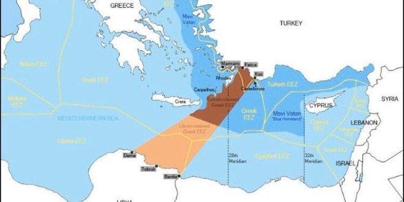

A few decades ago, during the "1987 crisis" Greece and Turkey came very close to Armed Conflict over disputed drilling zones in the Aegean Sea. Turkish expanding Sea Exploration Activities with Piri Reis and Sismik 1 ships created a provoked tension between the two countries. Greek plans also to nationalize the consortium of companies that was drilling oil off Thasos island and a planned drilling activity 11 miles east of the island, was recognized as illegal and provocative by the Turkish Government. The crisis escalated quickly and military forces of both countries were set on the highest alert level while Political and Military leaders of both countries threatened to use armed force if obstructed by the other.
The crisis was ended when international pressure was increased (mainly from other NATO allied countries) and Britain's Lord Carrington, the Secretary General of NATO, urged Greece and Turkey to avoid the use of force and offered to act as a mediator.

.
Turkish Prime Minister Recep Tayip Erdgogan recently unveiled his plans for a wider role of Turkey in the Region and the expansion of the country's sphere of influence even outside its physical borders
September 2, 2019: Turkish Prime Minister makes clear his intentions as he presents his Mavi Vatan (Blue Motherland) plan. Based on this claim, Turkey does not recognize officially Exclusive Economic Zone rights to any Greek island close to Continental Turkey, thus claiming that half the Aegean Sea and very large areas even over Libya are part of its own Exclusive Economic Zone. The newly elected Greek government issues a protest.
December 5, 2019: The Turkey-Libya EEZ Agreement is announced and days after, Turkey submits it officially in the UN. Greece reacts by declaring it as invalid. Given the ongoing civil war, Turkey makes it public that will assist the GNA (Government of National Accord) militarily.

January 17 2020: Greece reacts by inviting General Haftar, leader of LNA (Libyan National Army) for talks before his trip in Germany ahead of another round of peace talks.
February 2020: Turkey is facing increasing casualties in the Syrian front as the Syrian Army with the support of Russia is launching a series of counterattacks north.33 Turkish soldiers die in a single air raid.
February 28 2020: Turkey reacts by declaring that all restrictions on the land borders with Greece are lifted and all immigrants are free to cross. In fact, key members of the Turkish Government make no secret that their aim is to blackmail EU for financial aid and destabilise the Greek Government. This escalates into a show of will as Greece declares its firm position not to allow any trespassers and mobilises Border Guards, Police, and Army while receiving token reinforcements from Poland, Austria and Italy.
March 20 2020: Greece has managed to protect what considers to be European borders by having successfully blocked any trespassing attempts that were supported by Turkish police. Rumours regarding the impact of Covid-19 in Turkey start circulating while Greece is facing a second major crisis and announces a general lock-down.
April 22 2020: Drill ships Fatih & Yavuz and research vessels Barbaros and Orucreis continue their activities inside what Cyprus considers to be their EEZ. They are escorted by a number of ships of Turkish navy with UAV support .Greek foreign ministry condemns this as an act of piracy. This action takes place while Turkey sees mounting losses due to Covid-19, Turkish lira on a free fall and oil prices so low that drilling is not viable.
13 April to 3 May: Exxon Mobil, Noble Energy, ENI and Total are stepping out (2 year period) from most of the sea exploration and Drilling activities on Cypriot Exclusive Economic Zone due to uncertainity an low prices of Oil/Gas in international markets .
3 May: A Greek Army Hellicopter trasporting the Minister of Defence to Aegean Oinouses island have been harassed by two turkish F-16 fighter jets. The response from Hellenic Airforce was immediate and two Mirage 2000-5 mk2 scrambled and intercepted them.
May 2020: Greece is highly regarded as the country that managed to win the fight against the pandemic. There are ongoing talks as to the size of EE financial help ranging in the tune of €15-25Bn. Turkey runs a campaign to declare themselves Covid-19 free that backfires massively as the EU declare it not a safe place. More than 80% of companies in the hospitality sector declare bankruptcies. Following that, a wave of nationalisation of bankrupt companies follows that only stretches further the already stretched Turkish economy
June 08 2020: Unofficial discussions between Turkey and the International Monetary Fund are leaked. Part of that, mentions what most suspect about the number of victims due to Covid-19 and the terrible situation of the Turkish economy. Turkey reacts by declaring strict capital controls and blaming USA & Greece.
Present: Turkish Ministry of Foreign Affairs comes to the following grim realization; considering that the Greek economy is rapidly recovering and so does their armed forces and pitting that against the Turkish armed forces facing a quasi-embargo from the USA they realize that there is only a small window of opportunity to impose their will based on armed force. MIT intelligence bureau in a top secret memo confirms that there is a significant part of the armed forces that are discontent with current policies.
Turkey needs to act fast. The timing couldn't be better but also tight
Due to Covid-19, there is no tourism so no risk for collateral damages or casualties, the seas are relatively empty as international trading is slowly recovering, and most foreign capital ships are anchored. In addition Energy Giants like Exxon Mobil, Noble Energy, ENI and Total are freezing their offshore activities on Cypriot Exclusive Economic Zone and Easteran Mediterranean Sea.
Turkey announces that it will immediately commence exploration in at least two parts where Greece and Cyprus are strongly contesting and consider as part of their EEZ (Exclusive Economic Zone).
Having strong media coverage and with the majority of their Navy providing cover, two platforms begin their trip in what is expected to signify Turkey's dominance in East Med and thus toppling a long standing status quo.
While the Greek government evaluates the situation, news of further 2 vessels with adequate armed escort hit the media.
Due to Jamming from both sides, AIS (civilian Automatic Identification System) is not fully functional. Situation is complicated for both sides and civilian or allied casualties will create a diplomatic turmoil. Moreover a US Sub has left Suda port a few hours before and operates in the wider area, with unknown intentions. It is clear though that any attack on it will be considered as an act of hostility from the US.
Turkey has even issued a Declaration of its EEZ at the United Nations stating the borders of their Exclusive Economic Zone (EEZ) which includes major parts of Greece's and Cyprus EEZ. They have warned the Cypriot and the Greek Governments that they intend to defend their EEZ against any foreign vessels and warships that violate their modern "Lebensraum" (Territory claimed by a nation or state on the grounds that it is necessary for survival or growth)
Greeks are facing a dilemma:
Accept the fait accompli or fight back for something that could change the future of the country forever. While Turkey bets on the first, Greeks decide the second!
War...war is inevitable!